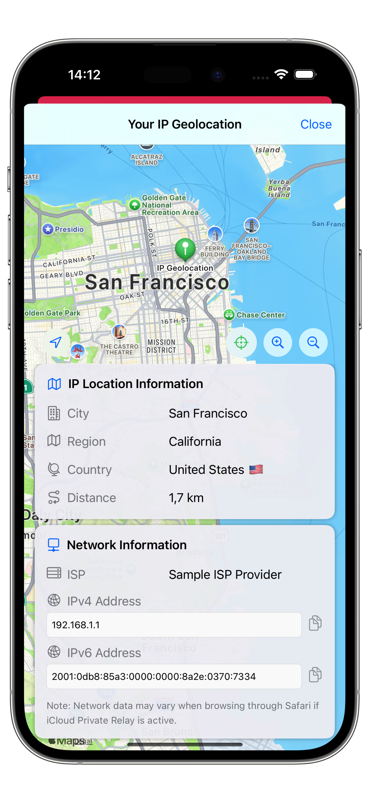
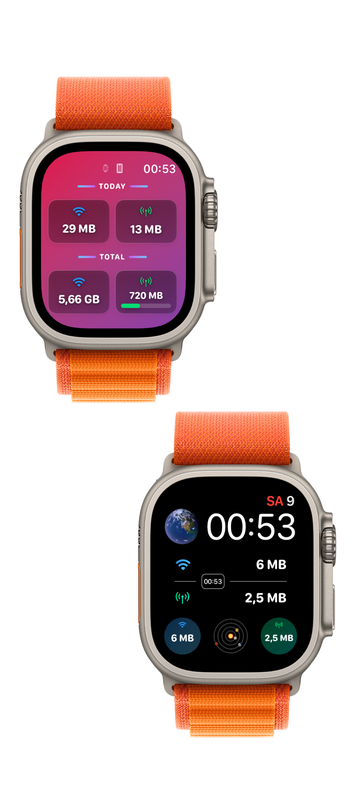
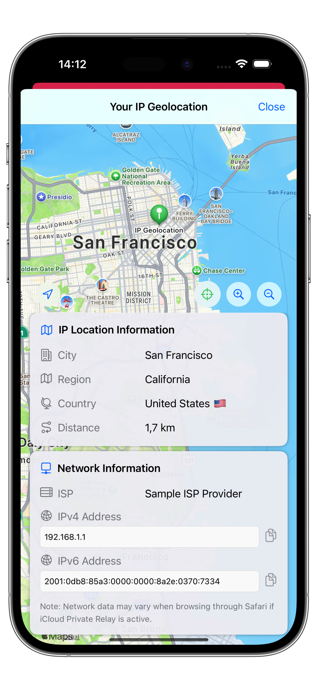
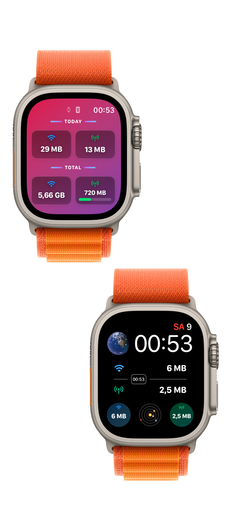

Network Usage Monitor
Developed in Jan. 2025
Network Usage Monitor is an intuitive iPhone app for observing real-time network performance and connection statistics. It provides continuous monitoring of upload/download throughput, current connection type, and historical trends to help users and developers diagnose intermittent network issues.
- Live network speed and throughput monitoring
- Visual historical charts and per-app usage summaries
- Lightweight background monitoring with minimal battery impact
- Simple export and sharing of logs for debugging
The app reached the top of the App Store charts in several countries and has been popular in Taiwan and Hong Kong. It’s designed for both curious users who want to understand their connectivity and for developers needing quick diagnostics on the go.

 



Privacy & Policy
Network Usage Monitor gathers only non-identifying network performance metrics (throughput, connection type, and aggregated usage statistics). The app does not collect personal content, messages, or browsing history, and it does not transmit personal data to external servers by default. If any diagnostic logs are exported or shared by the user, those exports will contain only the selected network data and timestamps. For questions about data handling, contact khashabri@gmail.com.
Disclaimer
The Network Usage Monitor app is provided "as is" for informational and diagnostic purposes. The developer is not responsible for actions taken based on the app’s measurements. Network readings can be affected by many factors (carrier throttling, server-side limits, local routing) and may not reflect absolute or guaranteed performance. The developer makes no warranties regarding accuracy, availability, or fitness for a particular purpose. For support or enquiries, contact khashabri@gmail.com.